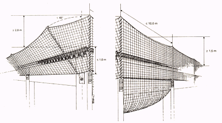

8 |
Anforderungen an Randsicherungen |
| 8.1 | Die Länge des Randsicherungspfostens ist so zu wählen, dass der Abstand des oberen Randseiles des Schutznetzes radial gemessen zur Decken- oder Dachkante
|

| Bild 5: | Randsicherung |
| 8.2 | Randsicherungspfosten müssen in der Lage sein, die Auflagerkräfte aufzunehmen und weiterzuleiten. |
| 8.3 | Der Randsicherungspfosten muss senkrecht aufgestellt werden. |
| 8.4 | Abweichend von 8.3 darf aus baulichen Gründen die Neigung bis zu 45° zur Senkrechten betragen. |
Bauliche Gründe sind z.B. große Dachüberstände.
| 8.5 | Der vertikale Abstand zwischen der Absturzkante, z.B. der Dach- oder Deckenkante, und dem darunter liegenden tiefsten Punkt des durchhängenden Schutznetzes muss £ 1,0 m sein (siehe Bild 5). |
| 8.6 | Schutznetze der Randsicherungen sind durch Kopplungsseile untereinander oder mit anderen Schutznetzen so zu verbinden, dass an der Naht keine Zwischenräume von mehr als 100 mm auftreten und die Schutznetze sich nicht mehr als 100 mm gegeneinander verschieben. |
Siehe DIN EN 1263-2 "Schutznetze; Teil 2: Sicherheitstechnische Anforderungen für die Errichtung von Schutznetzen".
| 8.7 | Schutznetze der Randsicherungen sind im unteren Bereich, wenn sie nicht mit anderen waagerechten Schutznetzen verbunden werden, so an Bauteilen unterhalb der Absturzkante zu befestigen, dass der horizontale Abstand zwischen Netz und Bauwerk £ 100 mm beträgt. Das Schutznetz muss in Abständen £ 750 mm an Bauteilen befestigt werden. |
| 8.8 | Der Abstand der Randsicherungspfosten untereinander darf nicht mehr als 10,0 m betragen. |